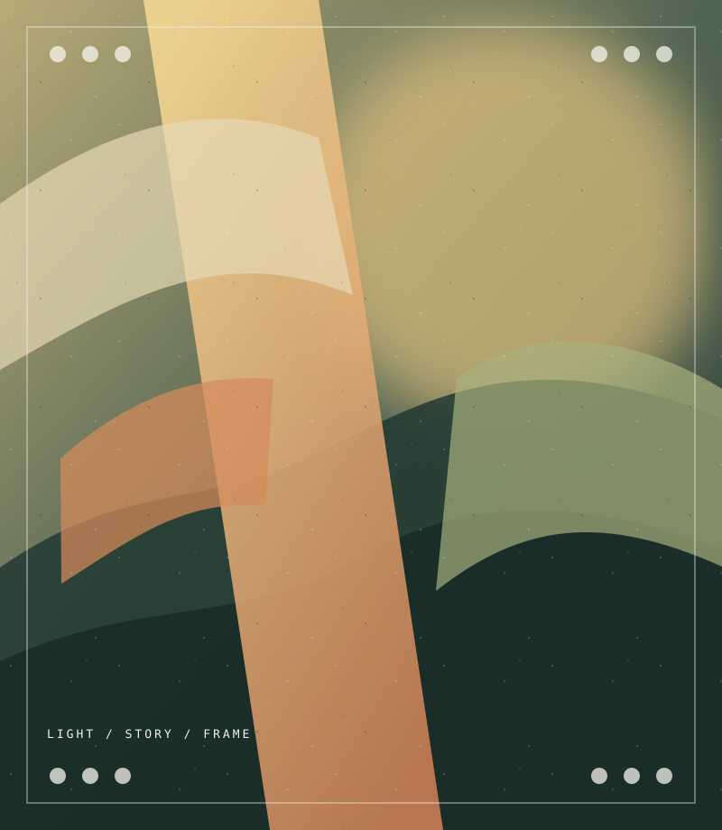

Marketing & advertising
Big-picture thinking, sharp messages, and the small details that make a brand feel human.
Communications student · New Orleans
I’m Ava Watson, a Communications student at Tulane University exploring the space between culture, creativity, and connection.

A quick introduction
I’m studying Communications at Tulane University, where I’m learning how ideas travel, how stories shape perspective, and what makes a message stick.
I’m especially drawn to marketing and advertising, film and media, and the thoughtful work that brings them together. I’m here to keep asking questions, sharpen my point of view, and find ways to make creative ideas matter.
Currently learning, always looking closer.
The ideas I keep coming back to
Different mediums, one shared question: how do we make people care?
Big-picture thinking, sharp messages, and the small details that make a brand feel human.
Visual storytelling, cultural moments, and the way a single frame can say so much.
What people notice, what they share, and the ideas that bring us into the same conversation.
These are the questions I’m exploring—not a list of claims or credentials.
Have a good story?
I’m always glad to meet thoughtful people and hear about interesting work. The best way to reach me is through the contact details on my resume.